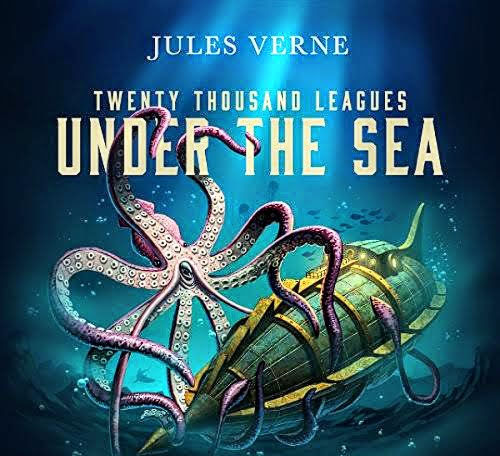

Maqbool Mehraj / 6th / Blue / 04
My Pick Of Aurthors Born In February
- 1
Kate Brave man
- 2
James Dickey
- 3
Henning Mankell
- 4
Keigo Higashino
- 5
Tom Eaton
- 6
Kathryn Stockett
- 7
Karen Joy Fowler
- 8
Jules Verne
- 9
Alice Walker
- 10
Bertolt Brecht
- 11
Jane Yolen
- 12
George Meredith
- 13
Eleanor Farjeon
- 14
Claire Cook
- 15
Linda Grant
- 16
Iarn Grant
- 17
Andre Norton
- 18
Andre Lorde
- 19
Amy Tan
- 20
Alan Frust
- 21
Anais Nim
- 22
Arthur Shopenhauer
- 23
Benard Cornwell
- 24
Rainbow Rowell
- 25
Amin Maalouf
- 26
Christopher Hope
- 27
Alexandre Backen
- 28
Colum Meccann
- 29
Feb 2022
Hermino Lee
Summary Of 20,000 Leagues Under The Sea

About the author
Born on 8th February 1828 , Died on 24 March 1905; Jules Verne was a great author in science fiction novels
.Some of his famous novels are Around the world in 80 days, 20,000 leagues under the sea
& Journey to the center of the Earth.etc.
The summary of 20,000 leagues under the sea
Twenty Thousand Leagues Under the Sea tells the story of
marine biologist Pierre Aronnax, his manservant Conseil and harpoonist Ned Land, who after joining the hunt for a
mysterious sea monster, are thrown overboard when the
monster attacks and find themselves prisoners of Captain
Nemo. A sea monster is on the loose, and the world is in
turmoil. Several ships have spotted a creature that is
bigger and moves faster than any other known species
living in the sea. Yet, despite several sightings not
everyone is convinced, and the whole world debates
whether such a creature could actually exist. Putting his academic reputation on the line, Dr. Pierre Aronnax, argues
that it must indeed be a sea monster as it is highly unlikely that a government or an individual could build such
a submarine without anyone knowing about it. After a number of ships collide with what is believed to be the
creature, the American government decides to send out an
expedition to find and kill the monster.It tasks Captain
Farragut with leading the expedition. Dr. Aronnax and his
manservant Conseil join the hunt, together with
French-Canadian harpoonist Ned Land, who is famous for
his whale-hunting skills.The three mens will face thrill
, suspense ,adventure in this amazing science fiction book.